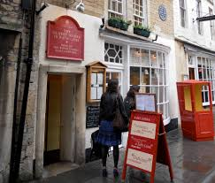
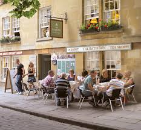
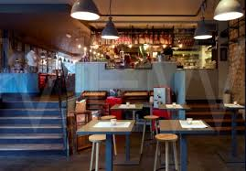

According to legend, Sally Lunn, a Huguenot refugee, arrived in Bath in 1680 and started work with a baker in Sally Lunn BunLilliput Alley (now North Parade Passage). Sally introduced the baker to her light, airy, brioche-style bun, which soon became popular at the public breakfasts and afternoon teas that were fashionable at the time. The recipe for the bun is still a closely guarded secret today and is mentioned on the deeds of Sally Lunn’s Historic Eating House and Museum, one of the oldest houses in Bath that features a kitchen museum in the basement and a characterful restaurant on three floors. The Sally Lunn bun is famous across the world and incredibly popular with visitors.

The Bath Bun (not to be confused with the Sally Lunn bun!) was invented by 18th century physician Dr William Oliver (for further information on Dr Oliver, see our section below on Bath Olivers). The doctor's buns were originally made from a rich, sweet egg and butter dough topped with crushed caraway seed comfits. However, they were so tasty his patients’ waistlines expanded at an alarming rate and had to quickly be replaced with the far plainer, savoury Bath Oliver biscuit; you have been warned! Today's Bath bun is still made from sweet yeast dough (often with a whole sugar lump in the centre). To try a Bath Bun for yourself, visit the Bath Bun Tea Shoppe or Hands Tearoom.

The biscuits known as Bath Olivers are a popular accompaniment for cheese and can be found on the shelves of most supermarkets in the UK. They were originally designed by Dr William Oliver, a successful 18th century physician who helped to treat the sick visiting Bath for the curative properties of the thermal waters. When Dr Oliver died he left £100, a sack of flour and his secret formula to his coachman, who subsequently set up a shop on Green Street and became rich on the proceeds. In tandem with architect John Wood and Master of Ceremonies, Beau Nash, Dr. Oliver was instrumental in founding the Royal Mineral Water Hospital to look after the less fortunate. This is now one of the oldest functioning hospitals in the UK.